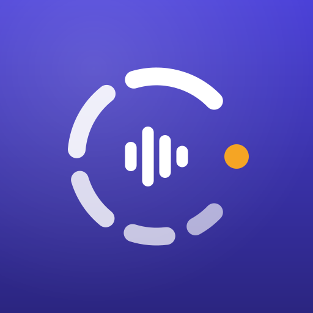

Cronos
Abrindo seu cronograma…
Cronos
Abrir o CronosSe pedir login, entre com a mesma conta do claude.ai que você usa no celular.
Sem internet
O Cronos precisa de internet para abrir seu cronograma e tocar os áudios. Conecte e tente de novo.
Instale o Cronos
Ele fica na tela inicial e na lista de apps do aparelho, com este ícone, como qualquer outro aplicativo.
- Abra este endereço no Google Chrome.
- Toque no menu ⋮ no canto de cima.
- Toque em “Instalar app” (ou “Adicionar à tela inicial” e depois “Instalar”).
- Abra este endereço no Safari.
- Toque em Compartilhar (o quadrado com a seta para cima).
- Toque em “Adicionar à Tela de Início” e depois em “Adicionar”.
Pronto!
O Cronos está na sua tela inicial. Abra pelo ícone a partir de agora.